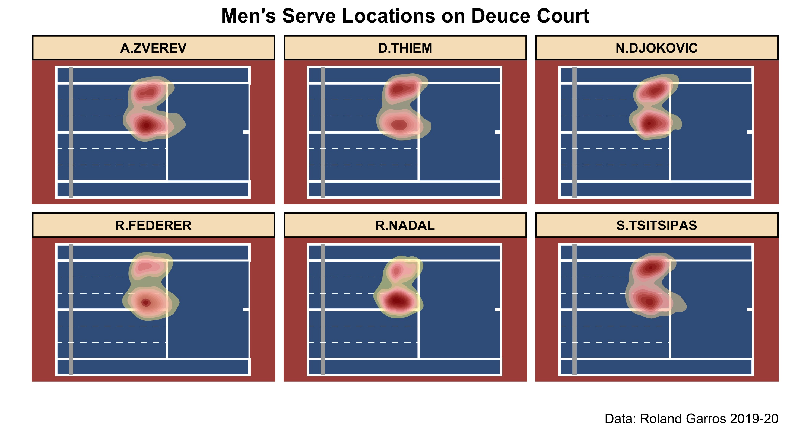
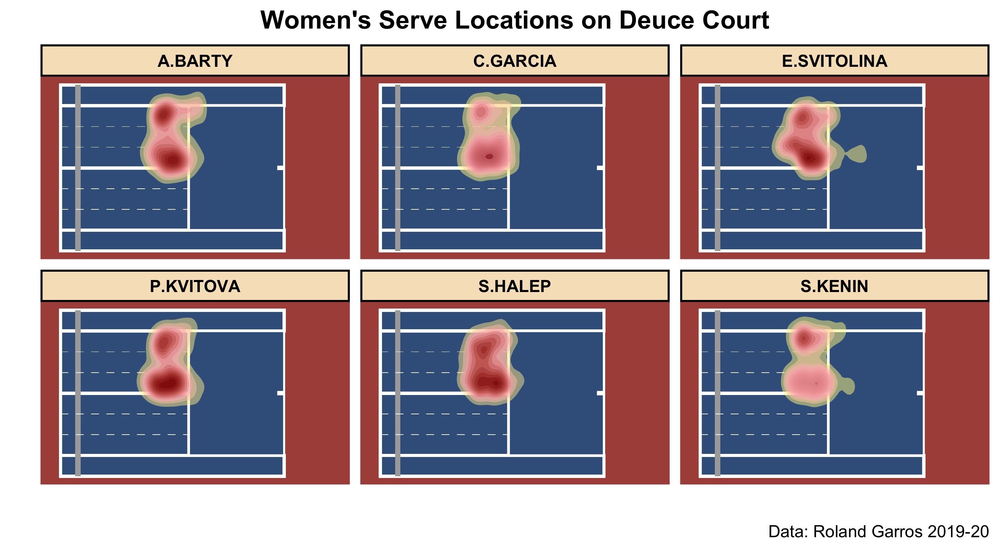
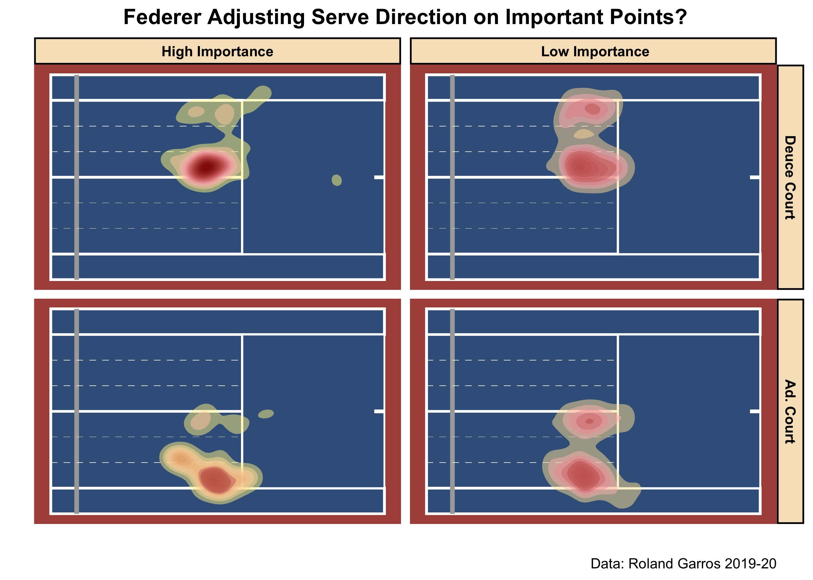
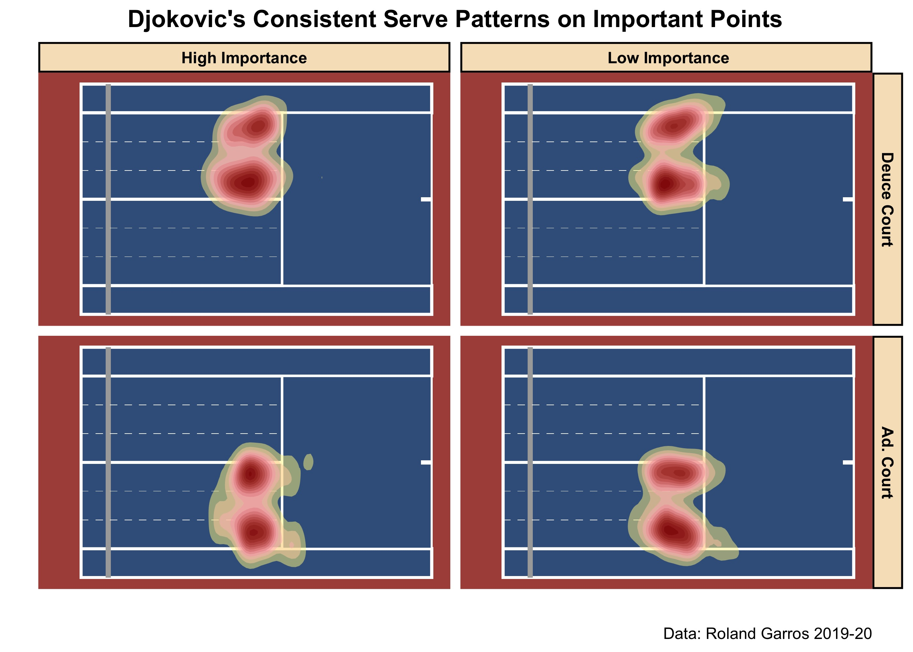
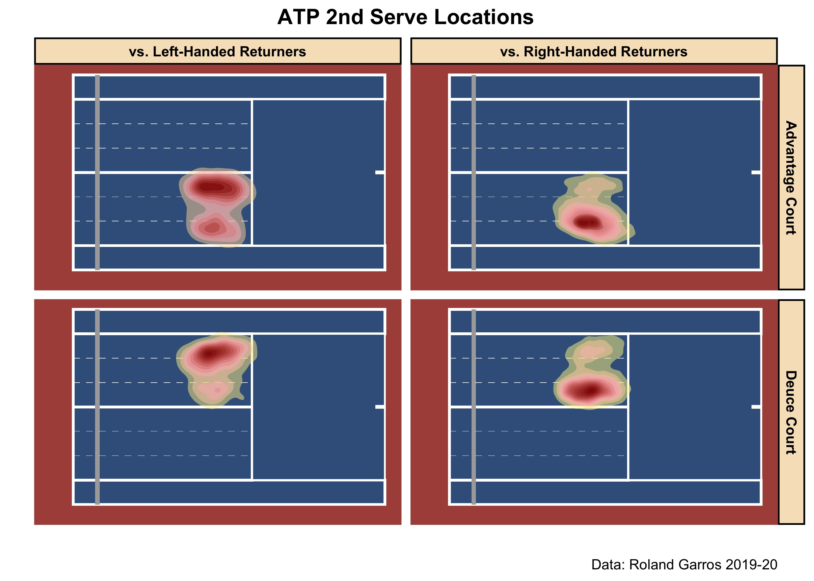
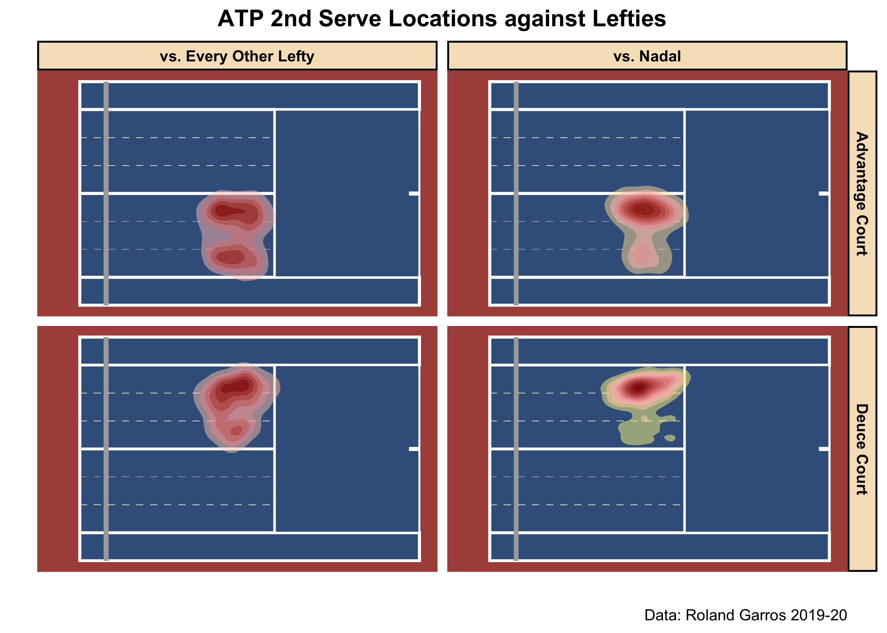
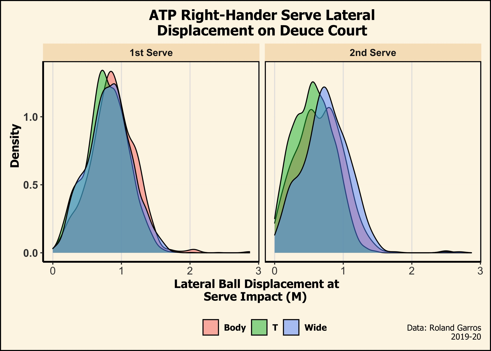

Anticipating your opponent’s move is a salient skill in tennis: a skill that undoubtedly requires hours of deliberate practice and training to properly hone. Nowadays, with serves frequently clocked above 200 KM/H, the serve is arguably the toughest shot to anticipate. Which variables should returners prioritize when bracing for the serve? With a newfound — and now publicly available! — ball tracking data source, let’s dive into some visualizations of what goes behind the anticipation of the serve.
With shot-tracking data, we can naturally visualize server tendencies using contours of 2D kernel density estimates. I present these density maps below, where darker red spots represent areas of higher serve location density.
 
With these colourful heatmaps, we can appreciate the variability in serve location tendencies across leagues and, also, players. ATP players typically aim their serves towards the corners: Wide and T. Meanwhile, the WTA has a more conservative approach where the body is also commonly targeted. And lastly, notice that on Deuce Court, both Nadal and Federer are inclined to serve down T; conversely, Kenin has a higher penchant for aiming out Wide.
It is clear that serve directions are server-dependent, but what other factors are in play? Let’s explore some other candidate predictor variables.
It is a popular belief that some players have a go-to serve — a supposed bread-and-butter serve — they resort to on pressure situations like a breakpoint. Maybe this is true, but I’ve been unable to improve any serve model fit by including breakpoint indicators1. Instead, I’ve implemented a point importance feature that calculates a player’s expected change in match win probability, depending on if they win or lose the current point. Initially proposed by Carl Morris, and popularized by Kovalchik (2016)2 , point importance is a numeric feature mapped onto [0,1]. With point importance, we can include match-score situations, besides breakpoints, that also have a sizable impact on match outcome — eg: serving when down 15 - 30 in the 5th set.
So that’s cool, but how exactly does point importance relate to serve direction? Let’s take a look at a Federer case-study.

For convenience, I’ve arbitrarily binned point importance such that all points above the 80th quantile are High Importance, while all other points are Low Importance. Notice that on important points, Federer loves the serve down T on Deuce Court, and opts for more Wide/Body serves on Ad. Court; by stark contrast, Federer is less predictable on his Low Importance points.
This of course is just a sliver of point importance’s impact on serve direction. For other players — Djokovic, for example — there is virtually no change in serve direction behaviour based on point importance.
 I admit being a novice in Game Theory, but there may be some mixed strategy implications here with Djokovic seemingly more willing to randomise his serve direction options; at least, more so than Federer.
Loffing et.al (2017)3 suggest that right- and left-handed servers have different serve location profiles; these differences are further compounded when accounting for the returner’s handedness. Tactically speaking, it is common to deliberately target your opponent’s weakness — which is oftentimes their backhand.

As expected, ATP players typically target the returner’s backhand, especially on 2nd serve. While not shown here, players don’t have as obvious a serve pattern on their 1st serve compared to their 2nd.
You may be skeptical of the generalizability of left-handed players in this sample, given the sheer dominance of Nadal on clay this past decade. Indeed, most points against left-handers in our data are against Nadal. Do players serve with the same, general tactic against lefties as they do when facing Nadal?
 The above plot suggests not. Against every other lefty not named Rafa, players will serve 2nd serves to their forehand and backhand. This observation is in stark contrast when compared to Nadal, where players routinely target the Spaniard’s backhand.
In a small-sample size study, M. Reid et al. (2011)4 suggest that kinematic cues, like the ball’s lateral position at serve impact, inform players on the anticipated serve direction. The idea is that the further away a player strikes the serve from the center mark, the more angle is created that enables a serve out Wide. Let’s see if we can’t replicate these findings.

Looking exclusively at right-handed ATP players on Deuce Court, we see that the relationship between lateral distance and serve direction is non-existent on 1st serve, but glimmering on 2nd. That is, it is only on 2nd serve where the further the lateral distance of the serve impact is to the center mark, the more likely the ball will land out Wide.5
While we’re still only just scratching the surface, there’s a lot of insight left to be gleaned from the availability of rich tracking data.
Maybe because breakpoints occur less frequently than other point types?↩︎
See http://on-the-t.com/2015/12/27/quantifying-clutch-performance/↩︎
The Serve in Professional Men’s Tennis: Effects ofPlayers’ Handedness↩︎
Serving to different locations: Set-up, toss, and racketkinematics of the professional tennis serve↩︎
This actually contradicts M. Reid et al. (2011)’s results, as they proposed the relationship was significant on 1st serves, and non-existent on 2nd serve.↩︎